Published: 2023-04-13
Source link: https://www.cnphotos.net/academy/show-130.html
Last week, it rained, and I visited some of the driest places in the United States. These include Death Valley, Joshua Tree National Park, and Canyonlands National Park. I was surprised to see them in storms and fog. Most of the time this is not good weather for photos, but now it was perfect for landscapes.
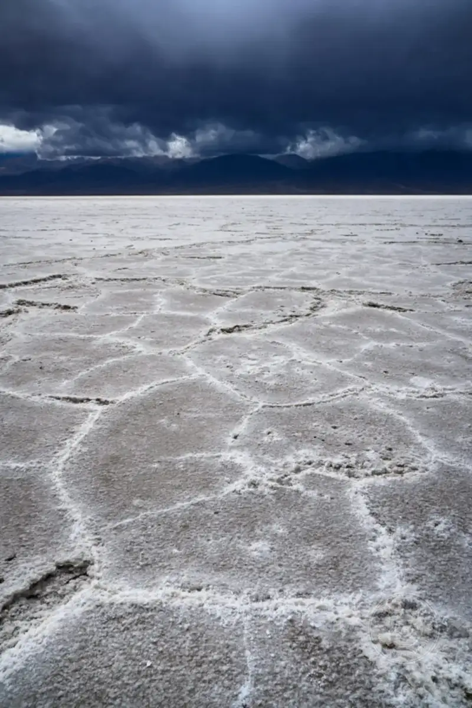
NIKON Z7 + Viltrox AF 24/1.8 Z @ 24mm, ISO 64, 1/200, f/11.0
Bad weather can still make a good photo. I repeat this mantra to myself every time I see raindrops start to fall.
A clear day can of course make beautiful photos. I love shooting backlit trees and other scenery in sunlight, and nothing beats the Milky Way on a clear night. But bad weather is its own category. The mood of rain, snow, fog, wind, and other unpleasant conditions can tell a story that good weather never can.
Chiaroscuro and the spotlight effect
The best part of bad weather is the light, which has endless variety and character. One of my favorite examples is the spotlight effect. Even in a storm, gaps often open in the clouds to let sunlight through. This selectively lights parts of the landscape and the sky itself in a fascinating way.
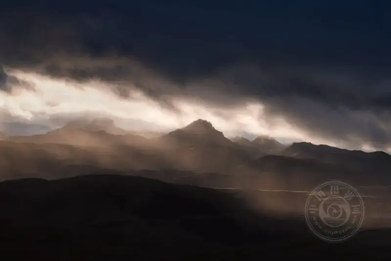
NIKON D800E + 70-200mm f/4 @ 135mm, ISO 100, 1/125, f/8.0
Another example of the spotlight effect is lightning, which is surely more dangerous. The part of the scene lit by lightning immediately becomes a striking, high-contrast subject, with a touch of chiaroscuro.
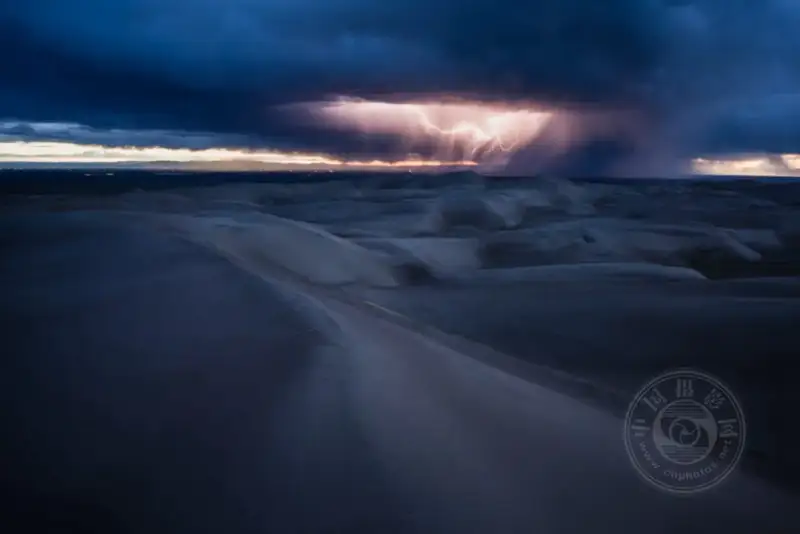
NIKON Z7 + NIKKOR Z 14-30mm f/4 S @ 18.5mm, ISO 64, 20 seconds, f/5.0
Sometimes bad weather hits from a certain direction. While dark clouds gather overhead, the sun still lights the landscape in front of you. This surprises me. Usually I want the sky to be brighter than the land. This alone makes the photo stand out.
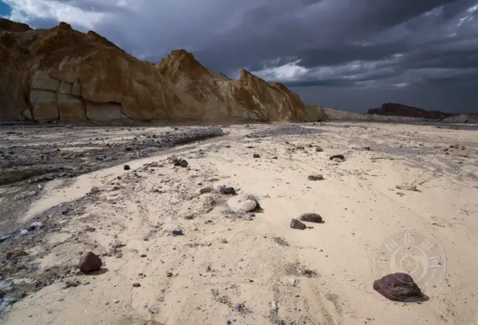
NIKON Z7 + Viltrox AF 24/1.8 Z @ 24mm, ISO 64, 1/160, f/13.0
These are just a few of the many examples of shooting in good light during bad weather.
Dust storms, rainbows, and blizzards, oh my!
If you want to be a better photographer, stand in front of something more interesting.
You can thank National Geographic photographer Jim Richardson for this line, which is one of my favorites.
Bad weather is interesting. If a dust storm hits while you shoot on a dune, that is a good story, and I can think of a thousand other examples. Blizzards, lightning, dust devils, frost, and rainbows rarely happen on a calm, sunny day.
In Jim Richardson's words, bad weather is something more interesting. Some of the most extreme places on Earth, from Death Valley to the Himalayas, suit photography for a reason. In such places, you can easily see the story of how weather shapes the landscape.
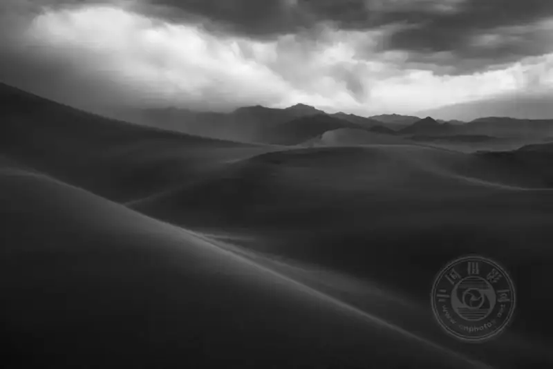
NIKON D800E + 35mm f/1.8 @ 35mm, ISO 100, 1.3 seconds, f/16.0
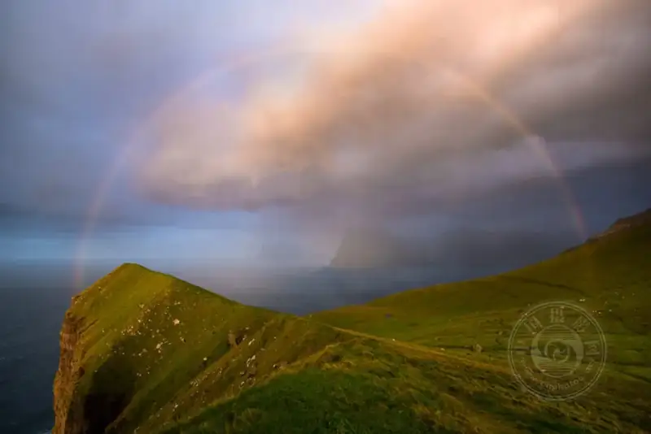
NIKON Z7 + NIKKOR Z 14-30mm f/4 S @ 15.5mm, ISO 64, 1/8, f/13.0
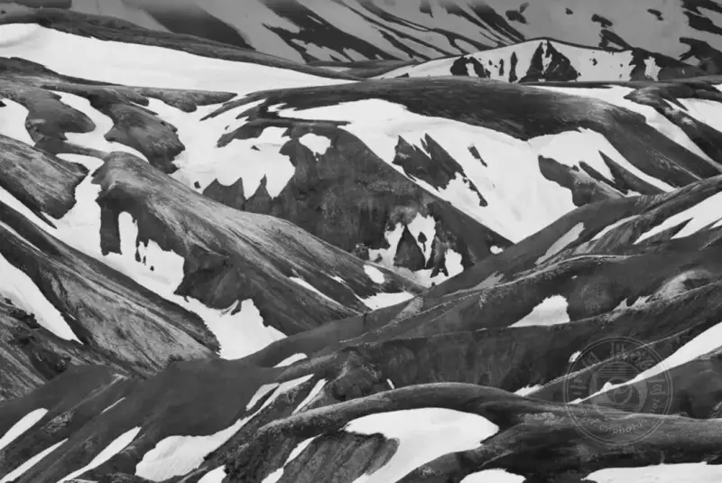
NIKON D800E + 70-200mm f/4 @ 160mm, ISO 100, 3 seconds, f/8.0
Color and simplification
It looks as if I took the photo below in good weather, but a second look at the colors hints at more. In fact, I took this photo in 2021 at Crater Lake, when a severe wildfire burned nearby and the air quality was bad. Yet for photography, the haze added a stunning, soft mood that you do not get in good weather.
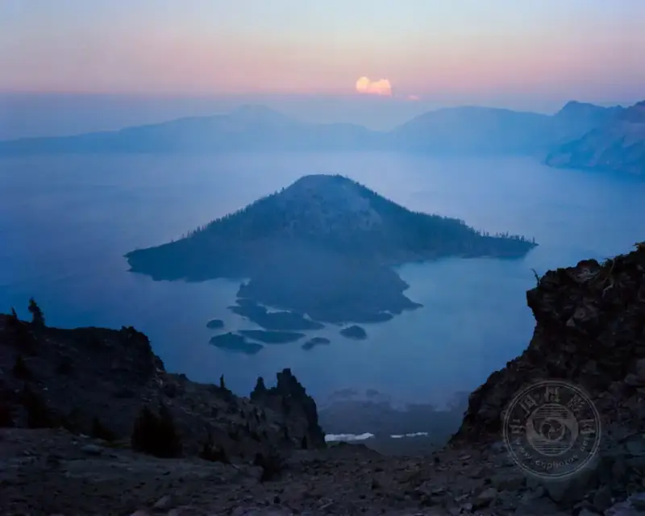
Chamonix 4×5，Nikkor 90mm f/8 @ f/20, 1 second, Kodak Portra 160
We usually think of bad weather as messy, but in the example above it helped me simplify the photo. This is not rare in bad weather. Distant sunlight can shine through the rain and make the whole photo yellow and orange. Or storm clouds can be so thick that the whole landscape turns deep blue. Then there are the obvious examples of fog and dust storms, which simplify your photo by blurring most of the detail in the background. Below are examples of these three cases.
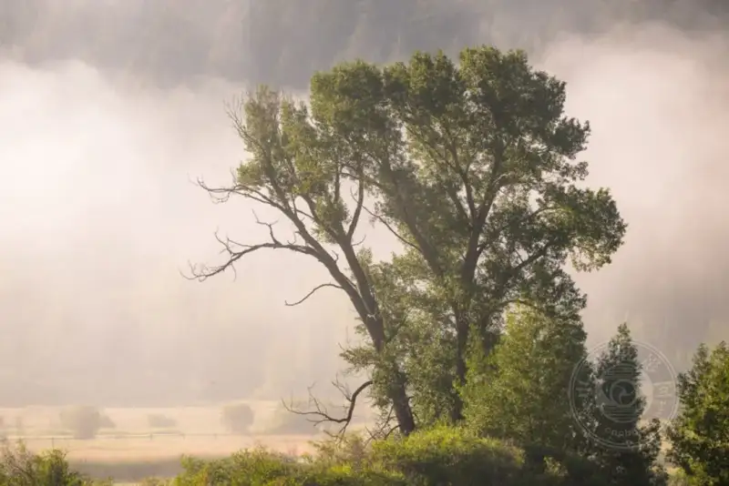
NIKON Z9 + NIKKOR Z 100-400mm f/4.5-5.6 VR S @ 240mm, ISO 64, 1/320, f/6.3
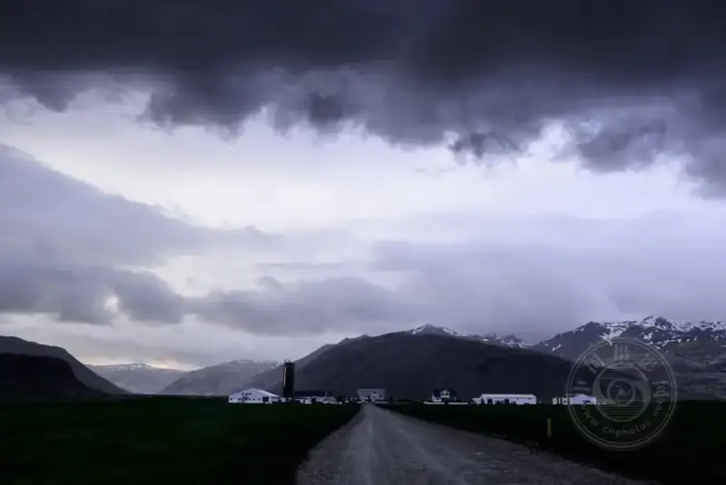
NIKON D800E + 24mm f/1.4 @ 24mm, ISO 100, 1/3, f/16.0
NIKON D780 + Tamron 100-400mm f/4.5-6.3 @ 270mm, ISO 100, 1/40, f/6.0
Bad weather does not always simplify your photo and unify the colors. It depends entirely on the scene, and of course on the direction of your lens. If the bad weather does not suit the shot, look for another chance to take a more effective photo.
In short
I hope this article shows why bad weather is so rewarding in landscape photography. How do you make the most of it when bad weather comes? My answer is simple. If conditions are safe, stay outside.
Staying out in bad weather reminds me of another part of landscape photography that many photographers dislike: getting up early for sunrise. Is it uncomfortable? Yes. Is it worth it? Absolutely. Too many photographers pack up as soon as it rains, and they miss some of the best light and subjects on Earth.
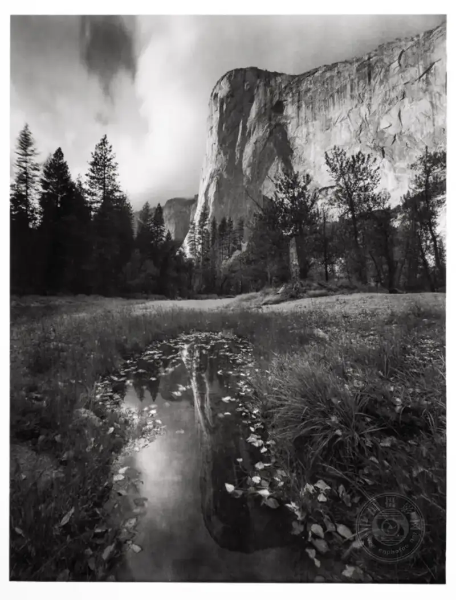
Schneider 150mm XL f/5.6 @ f/80, 15 seconds, 11×14 Ilford HP5+ 400
Personally, if I removed the photos I took in bad weather, I think my portfolio would shrink by about half. Outside of photography, I love a sunny day. But when I hold a camera, a few drops of rain almost always fall on a cloudless day.
In short, bad weather can still make a good photo, at least when you combine it with some of your own creativity. So when bad weather comes, put on the spare rain poncho in your bag (add one if you do not have one), and tell yourself to stay a while longer. You will be glad you did.